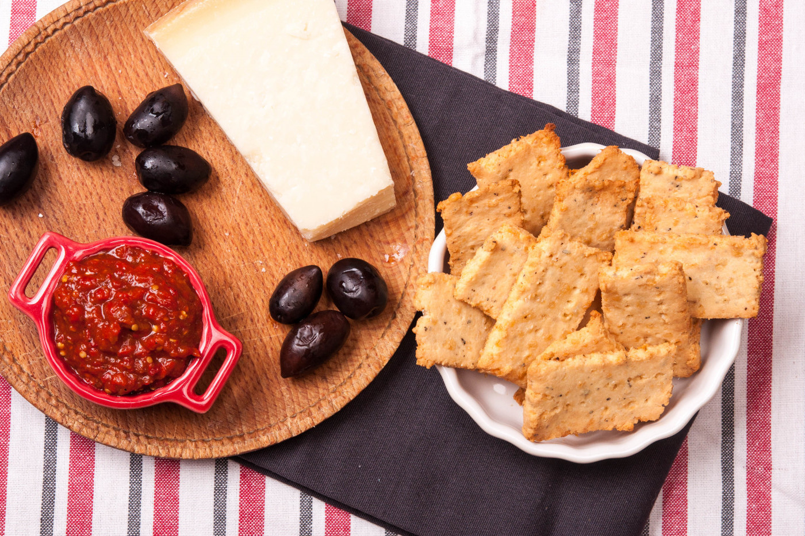

Рецептата за крекери с бадемово брашно е модерна! О, да! Рецептата за кето-крекери е много лесна, а също така и много сполучлива! Тази бърза и лесна рецепта за крекери с бадемово брашно е подходяща, както за привържениците на нисковъглехидратното хранене, така и за спазващите кето-режим. Крекерите са много засищащи, подходящи за закуска, за компания на чаша вино, или за моментите, в които гладът се обажда.
📖
Лесна
⏱️
15 мин.
🍴
10